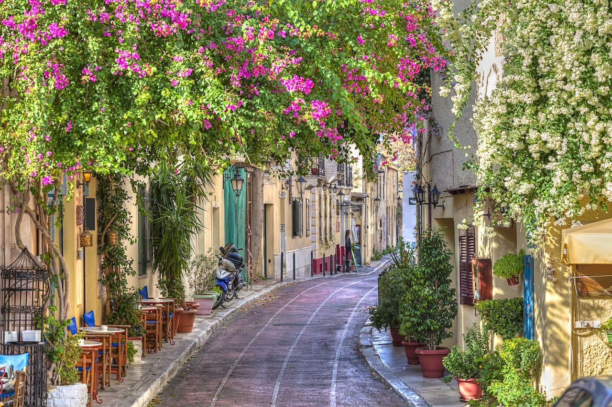
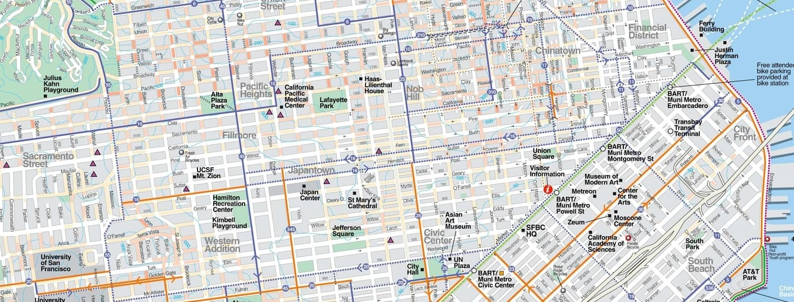

Ancient cities were focused on pedestrian layouts such as Rome or Athens. This focus on walking continued for many centuries but it was changed in the 19th centuries. With the rise of urbanization and industrialization many streets were becoming wider. Cities still had focus on walking but now many streets occupied not people but carriages and later automobiles. As time went this focus on cars grew and in modern cities there is walking but there is a huge focus on driving. Some places only allow you to drive instead of walk. In the 21st century there has been a turn of focus from cars onto people and onto walking many cities are trying to redeem a focus of walking. A city currently in construction is the line which is an arcology (An entire city built within a building) that is self-sustaining and has focus on a more walkable approach to transportation. In all walkable cities are coming back so we can all live a more environmentally friendly lifestyle and to heal our planet.
There are 2 main types of road designs. The “Grid” which is an arrangement of roads that fit a pattern or grid. Normally rectangular shapes repeated over and over again. There are also cul-de-sacs, these long roads that have dead ends and are usually used in suburban areas for regular living. Grids are useful because they are convenient. A pattern of shapes that all connect to each other means that you can easily get to your destination faster and it is also more cost effective than cul-de-sacs. Cul-de-sacs are normally used for suburbia. They easily respect the topography of the land and can be built anywhere and they offer advantages like bigger front and back yards for housing. Those are the 2 main road designs that are featured almost everywhere in the world.
